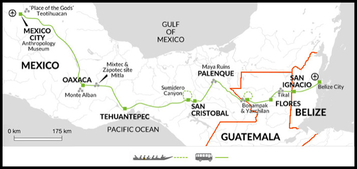
Our first morning in Mexico City when we took a tube and a bus ride, some architecture from different periods and plenty of local “flavour”.
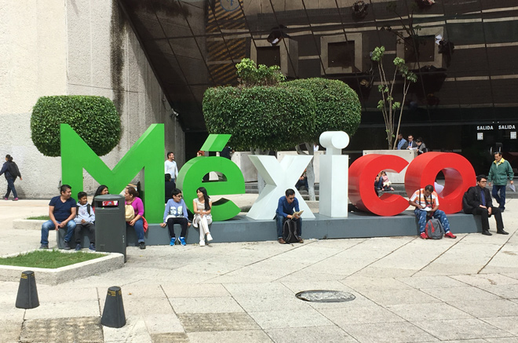
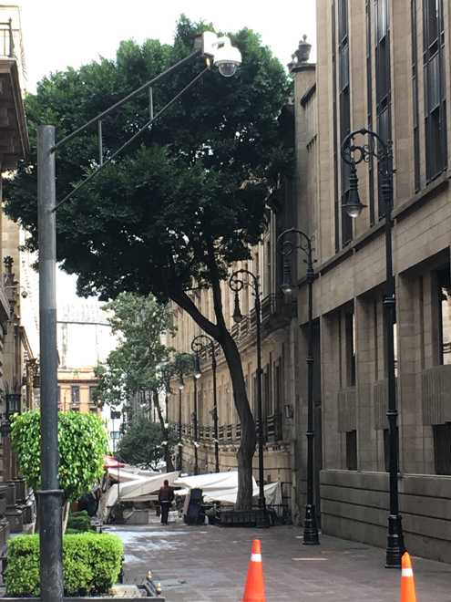
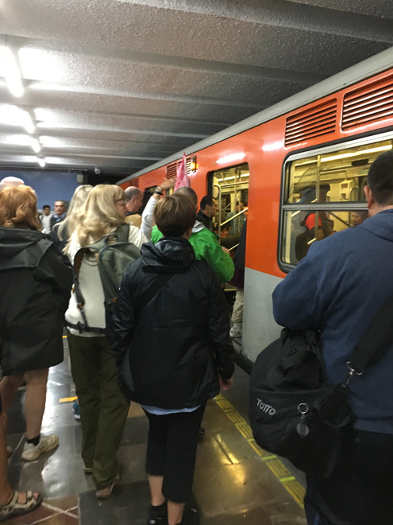
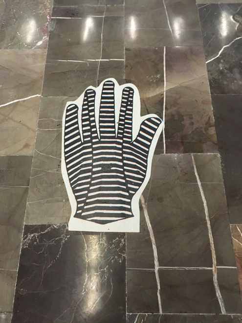
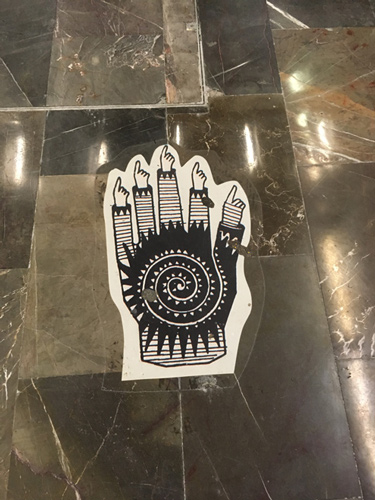
The Palacio de Bellas Artes houses many huge murals by Mexican artists, including Diego Rivera, David Alfaro Siqueiro and José Clemente Orozco. Construction begin in 1905 but complications arose as the heavy marble shell sank into the spongy subsoil and then the Mexican Revolution intervened. Architect Federico Mariscal eventually finished the interior in the 1930s in the more modern Art Deco style.
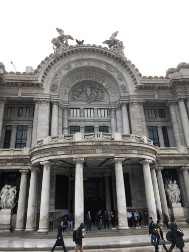
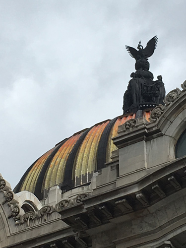
The Casa de los Azulejos (House of Tiles) is an 18th-century Baroque palace, built by the Count of the Valle de Orizaba family. Distinguished by its facade, which is covered on three sides by blue and white tile of Puebla state, the palace remained in private hands until near the end of the 19th century. It changed hands several times before being bought by the Sanborn brothers who expanded their soda fountain/drugstore business into one of the best-recognised restaurant chains in Mexico. The house today serves as their flagship restaurant.
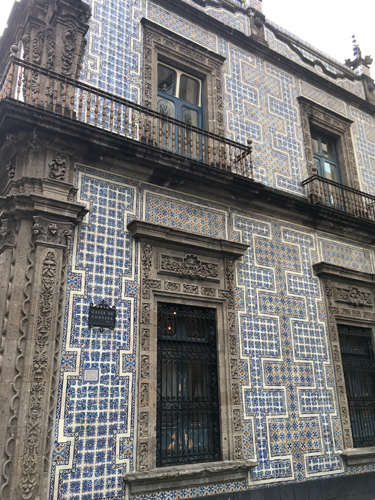
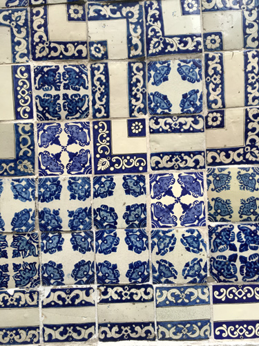
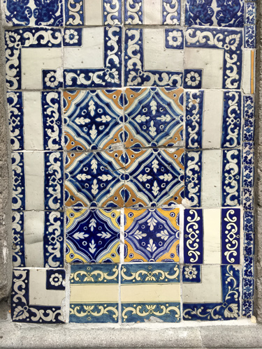
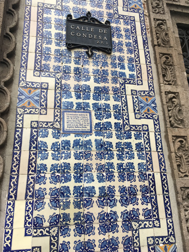
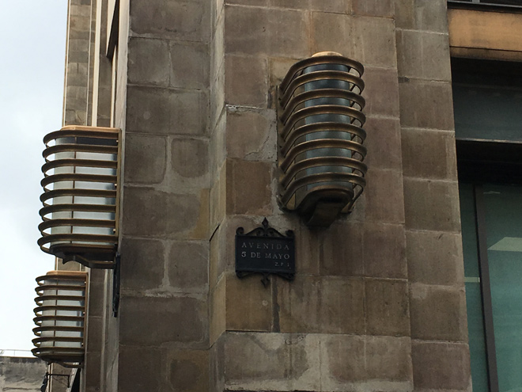
We visited the local shopping streets plus the Zócalo (main square) which is a lively spot where protesters were picketing the Presidential Palace and pickpockets were taking any chance they could ...
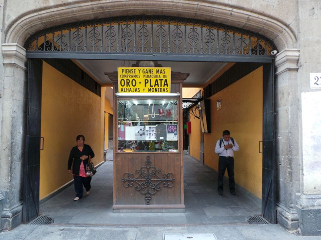
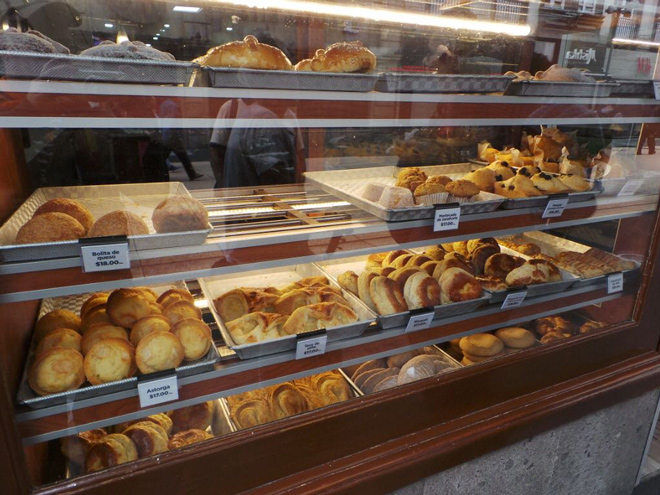
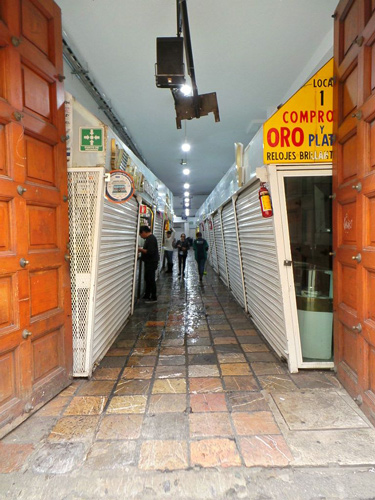
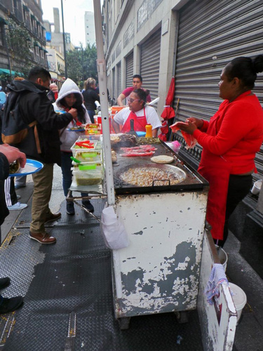
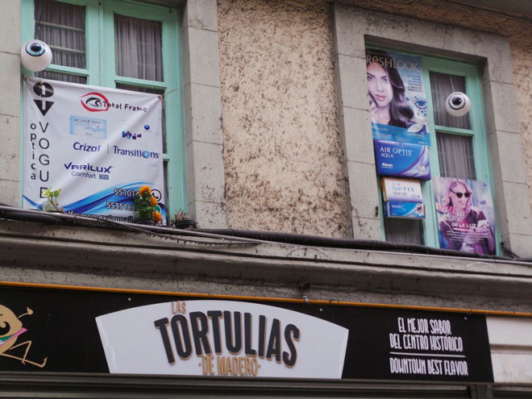
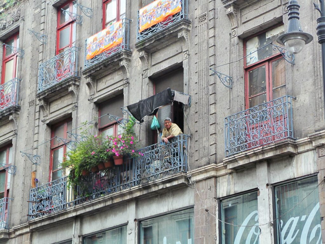
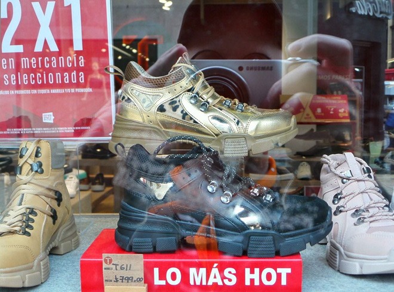
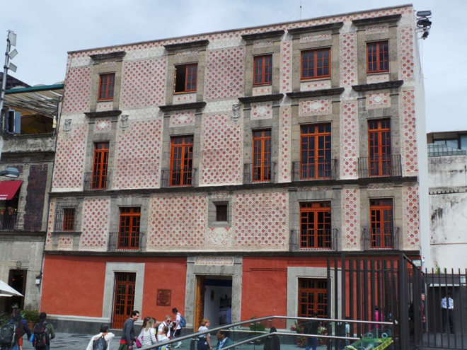
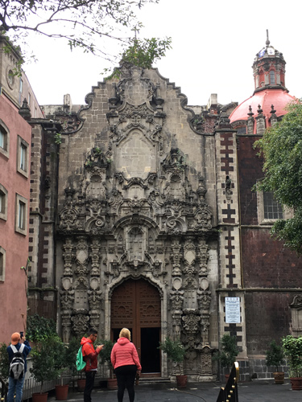
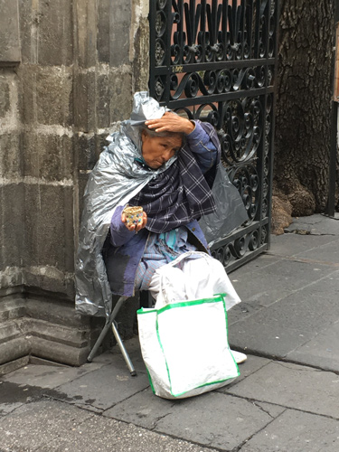
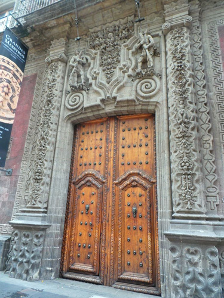
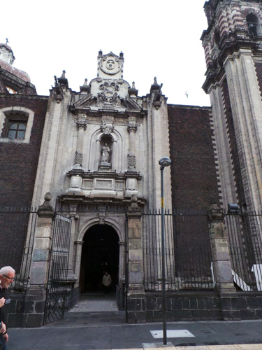
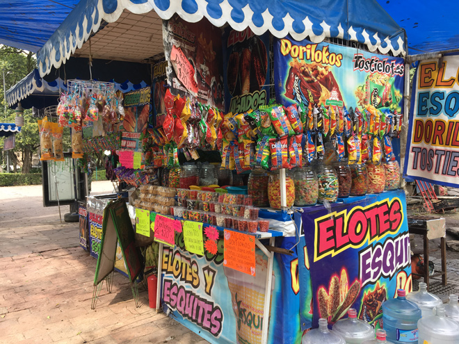
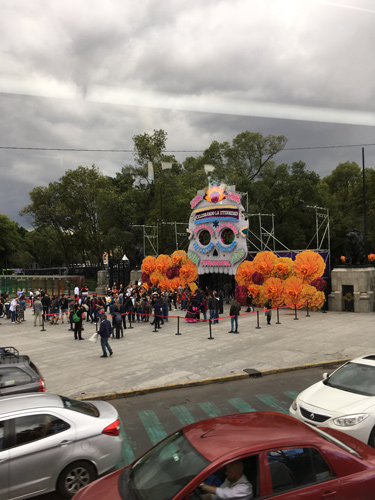
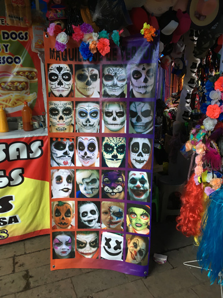
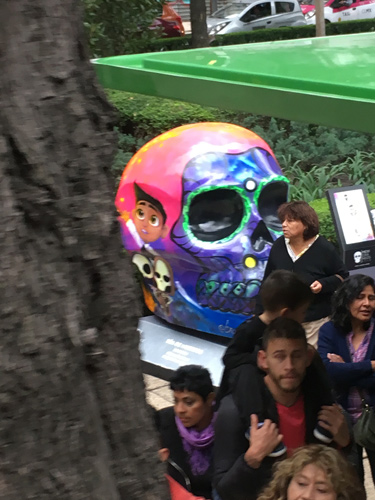
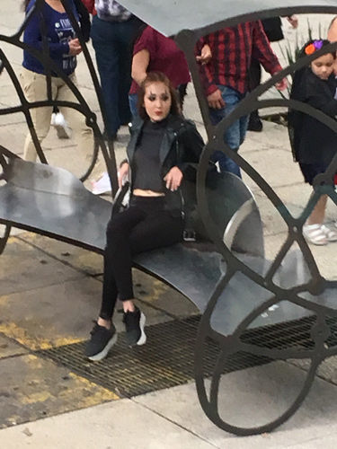
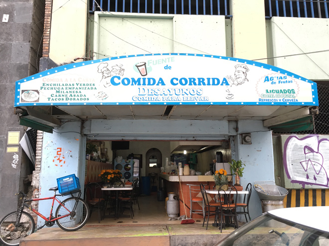
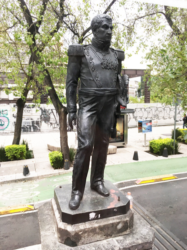
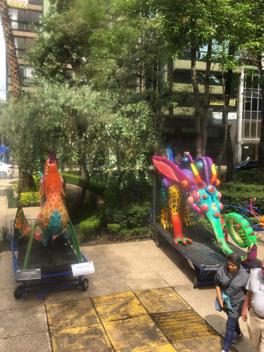
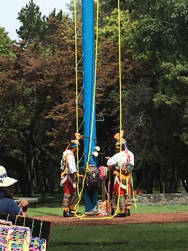
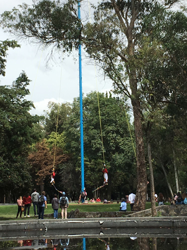
In one of the central parks we saw a strange sight - indigenous Totonac people performing their spectacular voladores rite ('flying' from a 20m-high pole) - which they did every thirty minutes or so.
Modern day Mexico City is built over the site of Tenochtitian (the old Aztec capital) and there are plenty of displays illustrating its history.
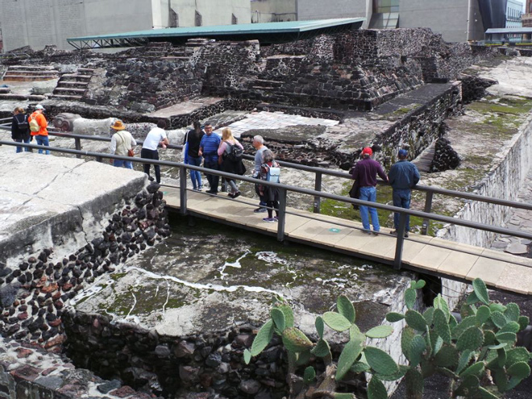
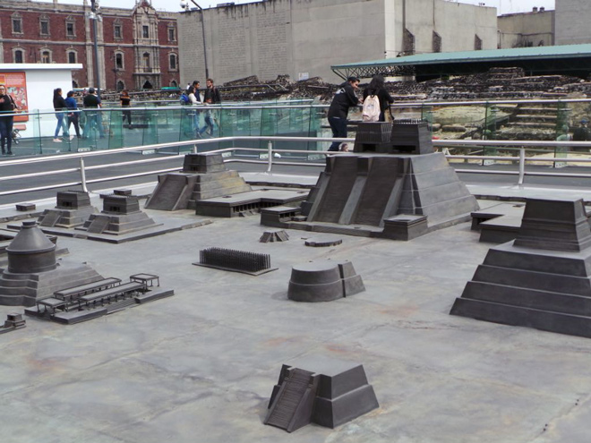
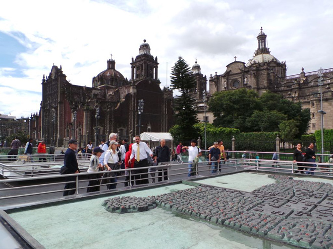
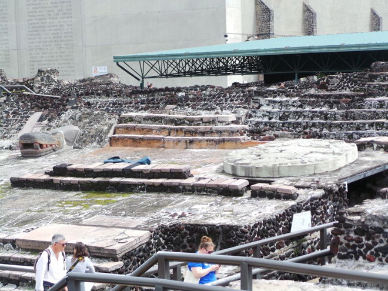
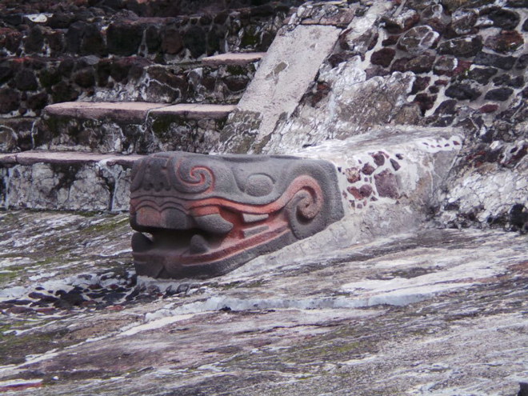